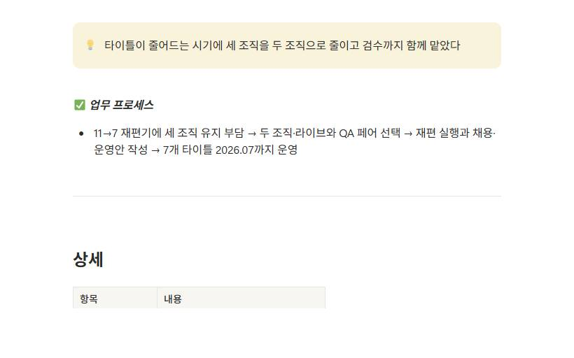

Portfolio · Product decisions & milestones
Turned the survey request for webview events into shipped in-game minigames and webview events
ShippedProduct decisions & milestones
| Period & role | Employed 2024.10 – 2026.07 · Team Lead, Live Game Design (live director) · case period: survey 2025.11 → launch 2026.05 |
|---|---|
| Problem | In the November 2025 satisfaction survey across 6 titles (Korean, English, Japanese), IP satisfaction was high and players asked for the old webview events back. I took that on as an event improvement task. |
| Decision | The order was to prepare and ship in-game minigames first, then extend to webview events. |
| What I did | Minigames v1 and v2 rolled out title by title (v1 2025-12, v2 2026-01). For the decoration event timed to a new group launch I wrote the brief myself and built a working AI prototype for the pre-development review, then set the scope down to core features to fit the dev schedule. After that I built the SuperStar JYP Nation 10th anniversary webview event prototype. |
| Result & status | Shipped — minigames v1 and v2, the decoration event (2026-04-30 to 05-23, SuperStar STAYC new group launch) and the 10th anniversary webview event. |
| Evidence | Notion "Satisfaction survey summary" · Notion "decoration_event" · 2 demos (decoration prototype · SSJ 10th anniversary webview) |
Also from the same period — 2 supporting cases
- Recurring product policy rework (KO)
- A high-yield pack sold without a cap and unbalanced the lineup. I proposed capping how often it could be bought while leaving the lower tiers uncapped, along with easing the cap in stages and widening the RP card pack rollout. The reworked lineup went live in the store group by group from late July to mid-September 2025.
- Restructuring with design, QA and CS under one lead (KO)
- While titles went from 11 to 7 I proposed restructuring three teams of 22 into two teams of 13. Each project got a live owner paired with a QA owner, I took the QA lead role as well, and we ran 7 titles on that structure through July 2026.


